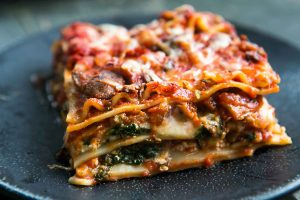

<< Home
Lasagna

A Stack of Saucy Pasta Goodness!
Making lasagna is a delightful culinary adventure: cook lasagna noodles al dente, prepare a rich tomato sauce
with garlic, onions, and herbs, then layer with creamy ricotta, mozzarella, and Parmesan. Bake until golden and
bubbly, then let it rest before serving. Enjoy your delicious, comforting lasagna!
Ingredients:
- 1 box lasagna noodles
- 4 cups tomato Sauce
- 2 cups ricotta cheese
- 2 cups shredded mozzarella
- 1 cup grated parmesan
- 1 pound ground beef or italian sausage (optional)
- 1 egg
Steps:
- Prepare the Noodles and Sauce: Cook lasagna noodles until al dente, then simmer garlic,
onion, and meat (optional) in tomato sauce with
herbs; season to taste.
- Prepare the Cheese Mixture: Combine ricotta with beaten egg (optional) for the cheese
mixture.
- Assemble the Lasagna: Layer meat sauce, noodles, ricotta mixture, and cheeses in a baking
dish, repeating until ingredients are
used up.
- Bake the Lasagna: Bake covered at 375°F for 30 minutes, then uncovered for 15 minutes until
golden and bubbly.
- Rest and Serve: Rest for 10 minutes before serving hot, garnished with herbs if desired.
Enjoy your delicious lasagna!